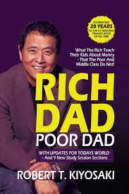

Rich Dad Poor Dad

Robert Kiyosaki
It advocates the importance of financial literacy (financial education), financial independence and building wealth through investing in assets, real estate investing, starting and owning businesses, as well as increasing one's financial intelligence (financial IQ).
Aadujeevitham
Benyamin
Goat Days (original Malayalam title: Aadujeevitham) is a 2008 Malayalam-language novel by Indian author Benyamin. It is about an abused Malayali migrant worker employed in Saudi Arabia as a goatherd against his will. The novel is based on real-life events and was a best seller in Kerala.
Khasakinte Ithihasam
O V vijayan
The novel tells the story of a young university student, who leaves a promising future to take up a primary school teacher's job in the remote village of Khasak. Little by little, the village reveals its secrets. The protagonist is soon bewitched by this ancient village where dreams and legends intermingle.
Wings of Fire

A P J Abdulkalam
A. P. J. Abdul Kalam. It was written by him and Arun Tiwari. In the autobiography, Kalam examines his early life, effort, hardship, fortitude, luck and chance that eventually led him to lead Indian space research, nuclear and missile programs.
Atomic habits
James clear
James Clear is a writer and speaker focused on habits, decision making, and continuous improvement. He is the author of the #1 New York Times bestseller, Atomic Habits. The book has sold over 5 million copies worldwide and has been translated into more than 50 languages.
Ikigai
Hector Garcia
Ikigai is a Japanese concept that means your 'reason for being. ' 'Iki' in Japanese means 'life,' and 'gai' describes value or worth. Your ikigai is your life purpose or your bliss. It's what brings you joy and inspires you to get out of bed every day
Alchemist

Paulo Coelho
Paulo Coelho is the author of "The Alchemist", he was born in 1947 in the city of Rio de Janeiro, Brazil. Being the author of 30 books that have sold over 320 million copies in 170 countries, he has become one of the most widely read authors in the world today.
Dhaivathinte charanmar
Joseph Annam kutty jose
Daivathinte Charanmar is a Malayalam book written by RJ, Actor and Motivational Speaker Joseph Annamkutty Jose. Through the book he tries to thank different people who helped him at some point in his life one way or the other. He believes that these people were put into his life by God himself.